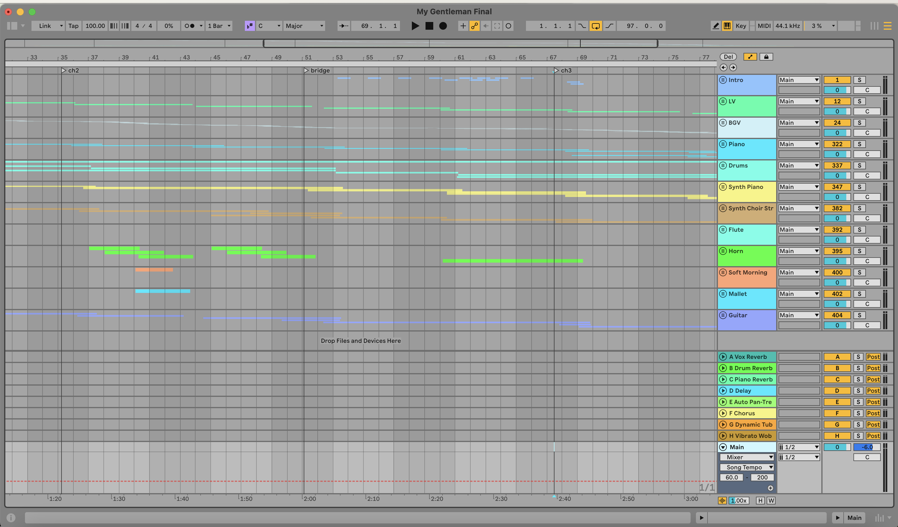

Written: May 24, 2025
Genre: Indie-Pop
Vibe: Sad after a breakup
Favorite Line: "My Gentleman wouldn't look down on me // My Gentleman, he'd think I'm something that's worth it"

My DAW for My Gentleman!
During the time I wrote this, I was at a low point in terms of self esteem but I wanted to write something that captured the heartbreak but also retained a sense of self worth. This was a really hard time for me so I just sat down at the piano after class and picked my favorite chord progression and kind of spilled my feelings. May have cried in the process (wouldn’t be the first time).
After some time passed, it was hard coming back to it to produce it because I retrospectively found it a bit cringey, like in a girl-get-over-yourself kind of way. But in Vienna, you are always surrounded by music so inspiration strikes anywhere. I forced myself to put on a drum loop and went to the practice rooms next door to once again get some piano chords in. Luckily, there was a stand that had holes in it so I could use it to hold my mic. I did some first vocal takes there and tried out some harmonies. Then it was back to my room again and clicking through tons of presets, most of which don’t work but the ones that do definitely do! That was the boring part, but the fun part was narrowing it down and actually laying down some MIDI. I chose horn and flute because it had that really warm tone, and also mallets, guitar, synth piano, and synth choir strings for a more orchestral feel. I also differentiated the background vocals every time the chorus came for a different feel, and added some whisper-speaking at the end. In terms of effects, I used my own reverb and delay presets and added auto pan-tremolo and vibrato to make the sounds more natural (or as natural as it could be with MIDI haha).
My favorite part was incorporating the St. Charle’s Church clock in the beginning, the bridge, and the end. We (the trip to Vienna) were waiting outside the Musikverein and the clock was the most beautiful, rich tone I had ever heard so I immediately pulled my phone out to record. That ended up being the intro since I didn’t really know how to properly start. In my room, I recorded the sound of my footsteps to make it seem like I was “running out of time” as the clock chimes louder. Then I cut up the audio and used each part as a percussive chime on the beat during the bridge. Lastly, I reversed the audio, and that was the outro and fade-out.